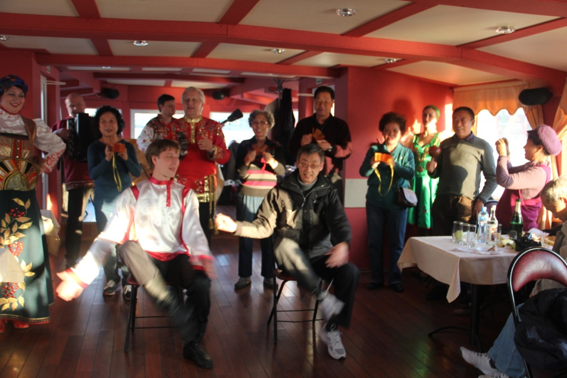

市老教授协会组织的俄罗斯之旅。游程第五天的下午。
在久负盛名的涅瓦河畔，我们登上了一艘漂亮的游船。人未进舱，耳边已经漂来欢快的乐曲声，一个小小的乐队，你拉我弹，正热烈地演奏着迎宾曲呢！
进得船舱，一派喜庆的景象。也许俄罗斯人知道国人喜欢红色，舱内一片红色的基调：舱顶、舱底、窗框、窗帘都染成了鲜红，几位演员的服饰更是是大红大紫。
汽笛响起，游船缓缓启动。
两岸旖旎的风光美不胜收，一幢幢宏伟的教堂，一座座精美的雕塑慢慢地向后移去。我们却被船上俄罗斯民间歌舞的演出深深吸引。
首先出场的是一位中年男歌手,他的浑厚的男中音，一下子把大家带到了逝去的年代：“深夜花园里，四处静悄悄，树叶也不再沙沙响，夜色多么好，令我心神往……”多么熟悉的旋律、多么熟悉的歌词，大家情不自禁地合着节拍，轻轻地吟唱起来。一曲唱罢、意犹未尽。他又接连唱了几首大家耳熟能详的经典老歌，台上台下互动热烈，使我们回忆起中苏两国人民之间的深厚友谊 ……
接着，一对身穿绚丽民族服装的中年男女跳起了欢快的民族舞蹈，他们动作夸张、表情丰富、身上充满了喜剧色彩，正当大家看得入神，那位浑身都是喜剧细胞的中年女演员突然走到了党校吴老师的面前，优雅的邀请吴老师共舞。
我心中暗暗思忖：这位女演员也真会挑人！我们这个团队，数吴老师见多识广、活跃开放。果不其然，吴老师面带微笑，与女演员一起步入舞池，只见他一会儿耸耸肩、一会儿点点头、一会儿扭扭腰，一副应对自如的样子。
人群中爆发出一阵阵哄笑声、喝彩声，尽情地欣赏着他俩的舞姿。谁也没有料到风云突起，那位搞笑的女演员突然以迅雷不及掩耳之势在吴老师的脸颊上 “啪”地一个亲吻，顿时，两片鲜红的花瓣贴到了吴老师脸上。遭此一袭，吴老师显得有些招架不住，表情有些尴尬，舞步也稍显迟钝了。好在他毕竟经验老到，不过几秒钟的时间又恢复了常态。
之后，一对年轻俊男靓女的舞姿吸引了人们的眼球。俄罗斯姑娘、小伙，金发碧眼、皮肤白皙、身材修长，本来就长得精致、漂亮，舞动起来更是婀娜多姿、神采飞扬。
一场舞罢，那小帅哥款款走来，居然邀请我上场。我本不善歌舞，但为了给大家助兴，义不容辞，也上了一回舞台。小伙子身手不凡，跳的是叫不出名称的“俄罗斯式”踢踏舞：“踢踏、踢踏”，他的手掌击打着身体不同的部位，协调、流畅；“踢踏、踢踏”，他两手碰击脚尖、身体腾空跃起，头顶几乎碰着船舱板。
然后，他降低了难度，让我在椅子上坐定，学着他的样子“拍手拍脚 ”。好在我平时也常锻炼，基本能跟上他的节拍。
欢快的集体舞，使气氛达到了高潮。好几位年逾古稀的老教授，也欣然接受盛情邀请，与俄罗斯朋友一起翩翩起舞，时而成双结对、时而围成圆圈，唱着、笑着、跳着、转着 ……涅瓦河上留下了我们欢快的笑声和歌声。
这真是与俄罗斯人的一次近距离的亲密接触，每一个微笑、每一次牵手都饱含着两国人民在漫长的岁月中结下的深厚友谊。
游程将要结束时，大家都在俄罗斯姑娘递来的托盘上放上了小费，这一瞬间，我突然更深切地感受到：祖国确实日益强大了，百姓确实日益富裕了。
真要感谢复旦的顾老师，不知在什么时候，他拍下了我和俄罗斯小伙在舞台上的场景，把那一刻愉快的心情，定格到了照片上。
（本文刊登在2016.11.22《上海老年报》）

俄罗斯小伙子邀请我上了舞台